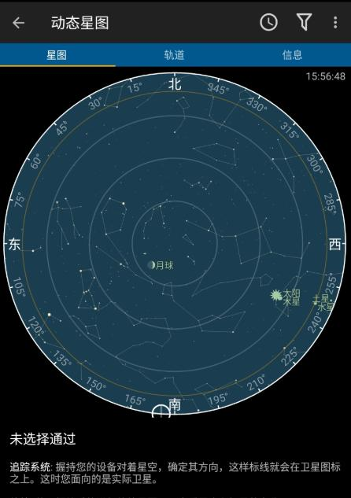
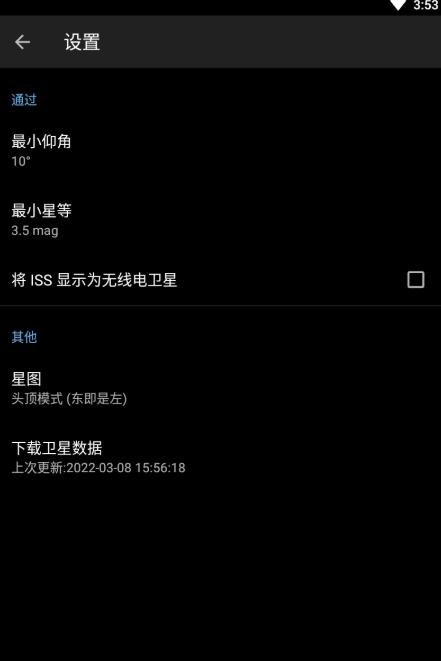

卫星过境速查 8 问 8 答
Heavens-Above 到底是什么、谁用得上、装起来麻烦吗、预测不准怎么办、夜间模式红底黑字有讲究、时区海拔那些容易踩的坑——一篇给新手也给老玩家的快问快答。
整理一篇关于 Heavens-Above 的快问快答，挑了那些第一次打开软件最容易卡住、或者用了一阵子才会发现的问题。
### Heavens-Above 到底是个什么东西？
一句话：它是一个卫星过境预报工具——告诉你国际空间站、星链、中国空间站天和、哈勃望远镜这些东西几点几分会从你头顶飞过去、亮不亮、朝哪个方向飞。
它不是天文望远镜控制软件，不做深空天体观测，也不拍照片。核心就一件事：预测近地卫星的可见窗口。去Heavens-Above官网就能拿到安卓 App，网页版直接浏览器打开也能用，数据来源是公开的轨道信息，每天自动更新。

### 谁会需要它，普通人用得上吗？
如果你曾经在夜空里看到一个移动的亮点、好奇"那是卫星还是飞机"——用得上。如果你想专门等 ISS 过境拍一张、或者追一次 Starlink 链的壮观场景——必须用。
用户群体大致分三类：偶尔抬头看天的好奇党（每年用几次，看看 ISS 什么时候过）、轻度观星爱好者（配合双筒或小望远镜找卫星）、深空/行星摄影者（需要提前规划卫星凌日凌月的精确时刻）。纯天文小白也能用，界面不复杂。
### 装起来麻烦吗，手机电脑都能用？
安卓应用从官方下载拿就行，装完直接开，不需要注册账号。网页版更简单，浏览器打开就能用，连安装都省。
需要注意的是，应用第一次启动会让你设置观测位置——这步别跳过，经纬度对了预测才准。手机有 GPS 的话会自动抓，手动输也可以，精度不用太高，差几百米影响几乎感觉不到。
### 打开之后第一件事该干嘛？
先看今日过境预报。默认会列出接下来一段时间内所有亮度在阈值以内的卫星过境，按时间排序。每条告诉你：哪颗卫星、几点开始、仰角最高多少度、预估最大亮度。
几个关键指标怎么读：仰角越高越好（30° 以上推荐观测，10° 以下基本没戏）；星等数值越小越亮（ISS 能到 -4 到 -6 等，比木星还亮）；起始方位角告诉你该朝哪个方向等。
卫星列表是按时间排序的，不用自己算。想练眼力就把最大星等阈值调大到 6 等，会多出一大堆暗卫星可以挑。

### 预测了但没看到卫星，是软件不准吗？
大概率不是软件的锅。按这个 checklist 排查：
第一，天气。 云量多少比温度重要得多，星星都看不清的夜晚，卫星肯定也看不到。第二，位置。 经纬度对吗？时区对吗——差一个时区所有时间偏 8 小时，这是最常见的低级错误。第三，数据刷新了吗？ 轨道数据过期会导致预测偏差，野观前一定要手动更新一次。
还有两个容易忽略的：仰角太低（< 10° 的过境直接放弃，大气消光严重）和抬头时机——卫星速度约 7.6 公里/秒，从地平线爬到天顶可能只需两三分钟，提前 5 分钟到观测点、面朝起始方位角等，别卡着点才出门。
最后还有个可能：手机指南针没校准，方位角差了很多。做几个 8 字形手势校准一下再用。
### 夜间模式为什么是红底黑字，有讲究？
不是为了好看，是保护你的夜视能力。
人眼的暗适应需要 20-30 分钟才能完全建立，期间任何明亮光线都会迅速破坏已经建立的夜视——你的眼睛需要再次花几十分钟恢复。Heavens-Above 用红底黑字，因为红光波长较长，对视杆细胞（负责夜视的感光细胞）刺激最小。
正确的用法是：观测前 10 分钟就打开夜间模式让眼睛适应；观测中尽量减少看屏幕的时间，看完一条预测就把屏幕放下让眼睛回到暗适应；观测后别急着切回白天模式，让眼睛慢慢适应。OLED 屏上红黑配色还顺便更省电，但那是副产品不是目的。
### 时区、海拔这些小设置真的重要？
时区只影响显示时间——UTC 转本地时区用的，设错了所有时间偏差几个小时。好消息是手机和浏览器都会自动获取系统时区，绝大多数情况不用手动改。夏令时（DST）也会自动处理，不用操心。
海拔高度的影响更小，差几百米几乎没差别。只有两种精确场景需要关注：观测卫星的初升/落地点（海拔越高能越早看到）、拍摄卫星凌日凌月（需要秒级精度）。日常使用完全不用纠结海拔。
反而需要注意的是轨道数据定期刷新——正常使用每两三天更一次，野观前一定要手动更一次。近地卫星受大气阻力影响大，一周以上的预测可能差几分钟，观测当天早上刷新最准。想深究细节可以去翻Heavens-Above文档，时区换算、轨道数据更新、观测前后的注意事项都有系统整理。
### 有什么容易踩的坑？
三个高频坑：
坑一：时区设错。 以为是 UTC+7 结果手机给的是 UTC+8，所有时间偏了一小时，白等。坑二：轨道数据没更。 上周看的预测今天出门用，结果卫星早就飘到别的轨道了——观测当天早上一定要手动更一次。坑三：把仰角和方位角搞混。 仰角是卫星在天上多高（0° 地平线、90° 天顶），方位角是朝哪个方向（0° 北、90° 东）。找卫星先看方位角朝那个方向等，再看仰角判断卫星会爬多高。
另外指南针校准别忘，手机放车里或贴过磁铁后容易漂。
### 和同类比，它好在哪里？值不值得装？
同类工具不算多，Web 端的有 Calsky、Satellite Predictor，移动端还有 ISS Detector 这种专注单颗卫星的。Heavens-Above 的优势是覆盖最全、更新最勤、界面最干净——不搞广告、不搞会员、不收集数据，就是把预测做好。
缺点也明显：国内访问网页版偶尔慢，没有原生 iOS App（只能用网页版），高级功能（比如卫星凌日预报、自定义观测计划）比 Calsky 弱一些。但对于 90% 的用户来说，它完全够用了。
值不值得装？如果你偶尔想抬头看看天上飘过的东西——值得装。 不占空间、不打扰、需要的时候拿出来查一下就好。重度玩家可以同时用 Calsky 补凌日预报，但日常查过境 Heavens-Above 就够了。国内访问网页版偶尔慢，这套资料也分别放在了GitHub、Gitee和GitCode，选哪个顺手就用哪个。